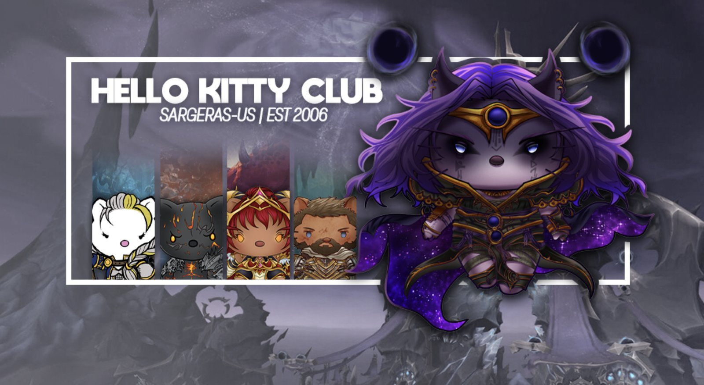
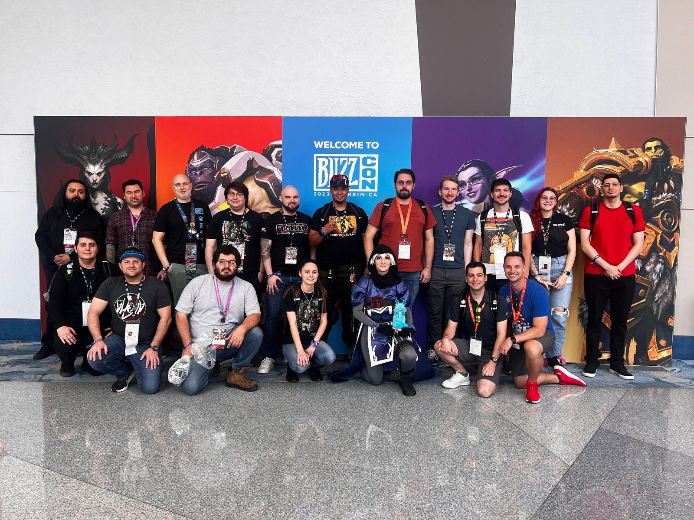
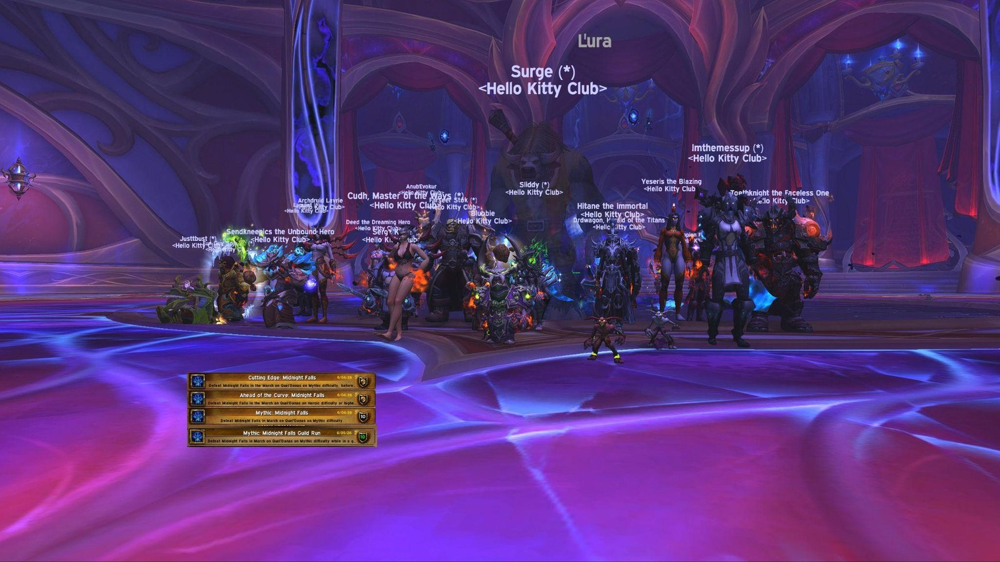
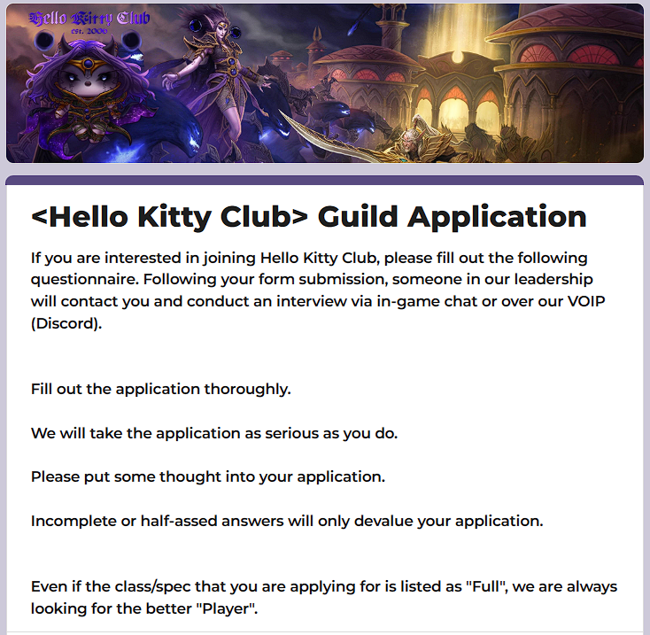
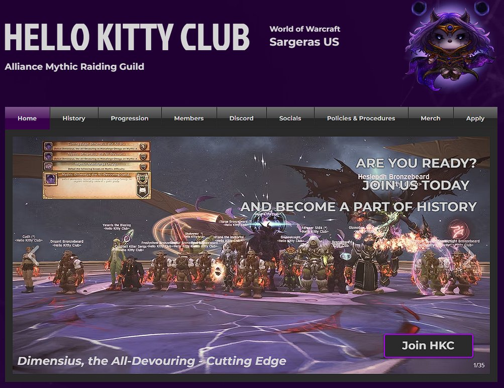
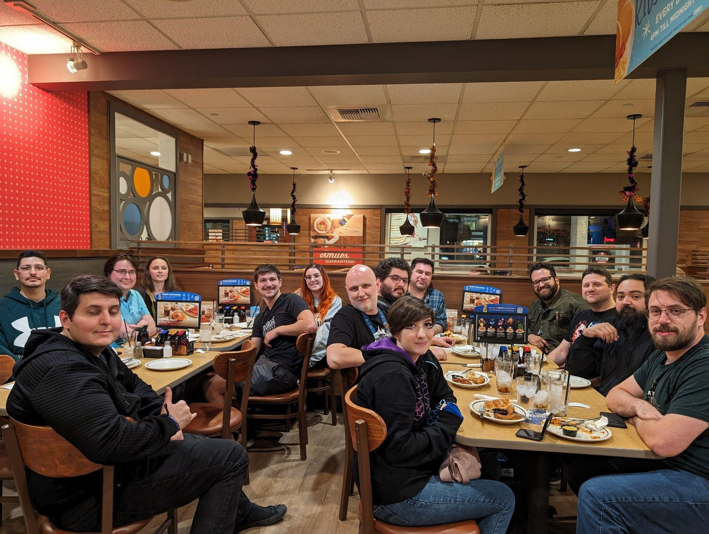

Last modified in preparation for the 12.1 patch Curse of Ula'tek, August 11th, 2026.
Hello Kitty Club Guidelines


Coming from a successful tour in Battle for Azeroth, HKC decided to take a step back and formalize some of our structure into a document that is readily visible to all our members. This tool will help us navigate rocky periods, maintain transparency in leadership and guild organization, and generally provide an idea of who we are as a guild, and as a community.
The Community


Hello Kitty Club was founded on December 14th, 2006. Since then, we have conquered many pixelated baddies, retrieved a plethora of loot, and made a lot of great friends. First and foremost in this document is you, our community. Hello Kitty Club is more than just our raid roster and the most hardcore of attendees, but rather it is a home for our larger community. Friends who have quit the game, raid with other guilds, or just don't have time because life has gotten in the way...all have a home with us.
Members come and go, but many return to us in some capacity, and we think it’s because there’s something about HKC, and our community that makes us special. Something worth returning to. When it comes down to it, everything that follows this statement, stems from wanting to foster that community as best we can.
Community Member Expectations
Essentially, be excellent to one another. Or truly, respect one another. We all come from different backgrounds, beliefs, cultures, and world outlooks--but we all come together to play and save Azeroth. Whether you still play with us or simply come by to hang out in the larger community, it’s important that we remember to be respectful of one another, despite possible differences. Treat others as you would like to be treated and, when problems arise, focus on the situation, issue or behaviour—not the person. Maintain constructive relationships and avoid harmful criticism of your peers. Miscommunications happen, so it’s important to think beyond the moment.
We acknowledge and respect all ethnic, religious, socio-economic backgrounds as well as all personal expressions relative to religion, culture, ethnic background, sexual orientation, gender-identity, physical, and mental ability. We trust members to avoid basic assumptions and to recognize the differences between yourself and your peers without shaming, discriminating, or questioning the validity of these differences. Differences bring new perspectives and facilitate a holistic appreciation of diversity.
Be open and flexible to receiving new information and show willingness to view contexts from multiple perspectives. Acknowledge that individuals have unique and particular needs in the community, be it in a raiding or other environment, and serve all with sensitivity, respect, and fairness.
We all have fun, and we won’t be actively policing everything; however, we do expect that if someone comes to us directly, or if they express they are uncomfortable with something happening that goes against these guidelines, we will expect that said behaviour ceases.
The Raid Team


While we have developed a larger community over time, HKC is and has always been primarily focused on raiding in World of Warcraft. As our roster has ebbed and flowed over our 20 years, we expect each member to contribute to our gaming legacy, adding your own unique presence and proclivities to our lengthy and strong history.
We’ve successfully achieved Ahead of the Curve every tier since its inception in Mists of Pandaria, Cutting Edge for Emerald Nightmare in Legion, Cutting Edge for Ny’alotha in Battle for Azeroth, Cutting Edge for Vault of the Incarnates, Aberrus, the Shadowed Crucible, and Amirdrassil, the Dreams Hope in Dragonflight, Cutting Edge for Nerub’ar Palace, Liberation of Undermine and Manaforge Omega in The War Within, Cutting Edge for The Dreamrift, The Voidspire, and The March on Quel'Danas in Midnight and our expectation is to strive for CE each tier in Midnight and beyond. To this end, it is important that we lay out the specifics of what it means to be a Mythic raider within HKC.
Raid Team Expectations (Mythic)
You are prepared (sorry Illidan):
We expect each of our raiders to come to the raid prepared. Meaning, you come to raid with all of the tools and knowledge you believe you’ll need for success, including those we’ve outlined as required. This means the best knowledge and gear available to you, the most ideal talents for raid, a functional UI setup, and the consumables you need (food, potions, etc.). Members of the Mythic raid team are required to keep the Raid Resources section of Discord unmuted so that pings can be made for weak aura acquisition, boss strat discussion, raid attendance announcements, etc.
There are 5 addons we require for raid. We use BigWigs or Deadly Boss Mods, Method Raid Tools, Northern Sky Raid Tools, RC Loot Council, and WoWUtils. Make sure they are downloaded and up to date.
With the launch of Dragonflight and the return of the “Need & Greed” loot system, our rules have changed with regard to item distribution.
During Mythic raid progression, all loot that drops in the raid will be passed and Teed will roll need on the items. In order to ensure that we can best outfit each other for optimal raid progression, RC Loot Council will be utilized and Teed will decide who the items are best suited for. If Teed is unavailable to raid, all loot that drops will still be passed and a designated officer will roll need on the items. RC Loot Council will be utilized and an Officer Council will decide who the items are best suited for.
Bind on Equip Raid Drops
Items that drop from raids that are Bind on Equip will be passed on by all members and Teed or the designated officer will roll need on the items. Teed or the Officer Council will determine whether it would be more beneficial to the raid team to equip a player with the item or to sell the item for gold to benefit the raiders. If it is decided to sell the item, Borban will be charged with selling the item and distributing 100% of the funds to the guild bank to pay for guild repairs, raid materials, potions, flasks, Vantus Runes and other consumables.
Loot will be decided on a boss by boss basis unless otherwise noted by the Raid Leader.
Finally, you reach beyond raid content where necessary in order to ensure preparedness, including weekly Mythic Plus content. However, be advised that we are a raiding guild first. Mythic Plus content (with or without guildies) is beyond the scope of these procedures and it is not required that officers or other members set up runs on your behalf. Be vocal and ask in guild chat (in-game/Discord), the leadership core will always try to help when possible, but remember that it is your own responsibility to ensure you get a weekly group.
You Put the Raid First:
We choose our raid roster based on what’s best for the guild and our current goals. This means we might have to sit people from time to time in order to suit those needs. As a result, you may be asked to sit for any variety of reasons, including class stacking, role stacking, gear optimization, etc. for a given fight. While we understand that it can be disappointing to be sat for a fight (especially on progression), we have an obligation to everyone in the guild to field the best raid composition that we can. A good raider will understand and accept this, for the good of the guild and the raid itself. We always endeavor to get those who sit the achievements/gear they miss. Be mindful that spots can be very competitive when we are at peak swings of attendance, so it’s even more important in these instances to be mindful of what you bring to the raid group, and how best you can serve the larger needs of said roster (even if it means voluntarily sitting, or in the least, sitting with grace).
Our primary goal with the HKC roster is to have enough quality people that we can afford to have a person or two missing one or two nights if needed. We recognize that life happens and that many of us have obligations outside of raiding. As much as we take WoW seriously, WoW should never be the most important thing in your life.
To this end, our bench might be bigger than you might see in a more hardcore Mythic group. Rest assured, when you let us know you can’t make a raid night (in #absences on Discord, preferably), you won’t get blacklisted or a reputation. Just let us know what’s going on if you have to take a break or if something happens.
You Have the Right Tools:
We require a few but some specific raid add-ons. Sometimes an encounter will require you to download an additional one beyond this list; however, you will be advised by the officers in time to be prepared. This information is usually found in #raid-strats-info on Discord when needed.
Mods:
- A boss alert/timer system, ideally BigWigs or DBM (Deadly Boss Mods)
- Method Raid Tools: https://www.curseforge.com/wow/addons/method-raid-tools
- RC Loot Council: https://www.curseforge.com/wow/addons/rclootcouncil
- NorthernSkyRaidTools: https://www.curseforge.com/wow/addons/northern-sky-raid-tools
- WoWUtils: https://wowutils.com/viserio-cooldowns
Software:
- Discord - If you’re a raider, you probably already have it, but to be sure you do: https://discord.com/
If you think you might want suggestions about other mods/tools that might help you as a raider, be sure to ask the guild and/or the officers. Many of us have been playing for a long time and have a lot of advice we can offer to help you head into Mythic with the right foot forward.
When possible, we also prefer to pool raw materials to create raid-wide benefitting consumables (like flask cauldrons, feasts, runes, etc.). It is expected that you will help contribute to these in some way throughout the raid tiers. We notice when people only take and do not return in kind.
Mythic Recruitment
We are always looking to fill any deficiencies or weak spots we might have in our guild, be it class role, utility, or otherwise, including the loss of a core tank or healer. When possible, we try to have existing players (usually DPS) fill that role, however, we also will recruit outside for that role when needed.
We will never have a true definitive list of needs for what we’re looking for, because we look for exceptional players first that fit into our community first, and quite often they end up fitting our needs or find their own way to fit. The guild’s needs though, like many other rosters, change as dynamically as events happen in our lives. However, when we find someone who we really like, and who fits with who we are as a guild, we will always try to bring them in for a trial.


Guild Operations
Guild Roles/Ranks
Guild roles and ranks extend beyond the raid roster and raid duties. They are also how we organize leadership, responsibilities, and expectations within the guild and larger community outside of the game.
Core Leadership Team:
While the core leadership’s roles and responsibilities are primarily tied to raid and raid-related management, they encompass a number of additional skills, responsibilities, and attention paid to the general running of the guild and larger community cohesion. We are your first stop for any issues or problems within the guild that you may have, and we welcome you to speak openly with us whenever there’s something you need to discuss.
We ask great things of the guild and our raid members but equally as officers we seek to uphold those standards ourselves first. We are a leadership team, as much as we are a larger guild, and we strive to be as balanced, fair, and understanding as possible.
- Guild Master (Master Kitty): Currently, Aurongodx - Auron is our Guild Master and he’s been in that position for over 10 years (much to his lament), he’ll probably be guild master for the next 10 years. While he may not always raid with us.
- Raid Leader (Badz-Maru): A rank that has most of the Guild Master abilities, responsibilities, and is usually served by the raid leader, which is currently Teed.
- Officer (Officer Kitty): The officer rank and the rest of the core leadership of HKC. Officers contribute in a variety of ways to the daily “life” functions of the guild, including roster invites, diving into logs, recruitment, guild cohesion management, guild bank/sales, promotion, community building, and others. Currently: Borban.
- Borban - Currently serves as our Mythic Raid recruiter and roster manager. He will primarily be the one reaching out to applicants and setting up trial runs. During mythic progression, he produces the roster on a boss by boss basis to ensure the most competitive attempts are made and each raider gets their required kills and achievements.
Other Guild Ranks/Roles:
We have a number of additional ranks that serve to mark the rest of the larger in-game guild population. Many of these overlap with roles available on Discord.
- Raider Kitty: Active members of our raiding roster within the guild. They are expected to adhere to the expectations listed above in Raid Team Expectations as well as the Community Member Expectations. They are good communicators when they are unavailable for raid nights. They receive guild bank repairs, and contribute in kind to the guild’s resources for raids (consumables, etc.). They are prepared to raid during raid times, whether on the bench or not, if asked.
- Casual Kitty: Active members of the guild who are usually friends, family, or otherwise “casual” HKC players. They are not expected to adhere to the Raid Team Expectations; however, they still must abide by our Community Member Expectations. They are not expected to always be “raid ready;” however, we do expect a degree of preparedness if coming into alt nights or “casual” raid nights, depending on the level of difficulty. We can only carry so far. If a raid member ever stops raiding, if guild members’ friends want to join, or if HKC community members who raid elsewhere want a home in the guild, this is the rank.
- Alt Kitty: This is the rank for all toons in the guild not designated as a “main” character via the raider or casual ranks. If an officer does not alter your note to reflect who’s alt it is, please be sure to edit your own guild note with “alt [YourName].” Auron frequently clears alts and members without notes who haven’t been online in a long time, so be sure we know who you are!
- Trial Kitty: The default rank that players invited to the guild start at unless otherwise promoted by an officer. Generally those who stay at this rank are recruits for the (Mythic) raid roster and are expected to follow the Raid Team Expectations & Community Member Expectations accordingly. Trials may be given raid spots over main raiders to facilitate their trial period (especially on bosses where their class or role might be needed). Trials do not receive guild repairs.
- A trial period lasts about up to approximately two raiding weeks (as in times where the trials are actively raiding with us) in order to properly determine if someone is a good fit for the guild and the raid roster. Trials who do not meet the criteria for raiders are welcome to request the Casual rank, with the opportunity to try for the main roster again later.
*If a character has been offline for longer than 2 years they will be removed from the guild but can be invited again if the player returns to the game.
Communications (Website, Discord, etc.)


We have a number of different platforms where we communicate with, and share the exploits of the guild. If you want us to follow you, or to know about your WoW/Guild-related content on Twitter, YouTube, or Twitch, let us know so we can add it to the website & socials.
Currently, you can find us:
- Our Website: http://hkcsargeras.com/
- Our Merch Store: https://arma.gg/collections/hello-kitty-club
- Twitter: https://twitter.com/HKCSargeras
- Instagram: https://www.instagram.com/hkcsargeras/
- Threads: https://www.threads.net/@hkcsargeras
- BlueSky: https://bsky.app/profile/hkcsargeras.bsky.social
- YouTube: https://www.youtube.com/@hellokittyclub
- WoWProgress: https://www.wowprogress.com/guild/us/sargeras/Hello+Kitty+Club
- Warcraft Logs: https://www.warcraftlogs.com/guild/id/71495
- Raider.IO: https://raider.io/guilds/us/sargeras/Hello%20Kitty%20Club
- Guilds of WoW: https://guildsofwow.com/hellokittyclub
- Wow Audit: https://wowaudit.com/us/sargeras/hello-kitty-club/
- Twitch: https://www.twitch.tv/hkcsargeras
- Discord: https://discord.gg/hellokittyclub
Discord
Our Discord server is set up to offer you the best experience we can outside of the game. We have streamlined a number of different guild functions through the Discord server so it’s extremely important to have it set up and use it for guild related communication (both in raid, and out of raid).
Here’s a quick highlight of some of the channels you need to know about for raiding, but please explore the rest at your leisure.
- 😸 # guild-announcements: Pretty self-explanatory, but this is where we post relevant notices about the guild or larger community. Often it’s Auron being sentimental and motivational (which is always great). Visible by all server members.
- 🙀 # raid-attendance: Automated posts via the raid helper bot. Sign up for mythic raids here (even if you’re absent or on the bench) if you’re on the roster. This is visible only by raider rank and above.
- 😺 # raid-strats-info: Where useful information, required additions for encounters, etc. are posted by officers. Sometimes on more difficult bosses, there may also be some theorycrafting about our best strategies here. Visible by all raiders, guild members, and trials.
- 😿 # absences: If you’re not going to be here for a mythic raid, or if you’re supposed to be coming to a different guild-related event, post about it here. Visible by all server members.
- 😼 # warcraft-logs: Logs are automatically posted here by webhook from members of the guild who have “joined” on Warcraft Logs. If you reliably want to log, get in touch with one of the officers to be added.
- 😹 # role-selection: Use this channel to self-enroll your status in the guild, but also other interests you may have outside of raiding. As mentioned in the Community section, we frequently play other games or express other interests with the larger HKC community outside of WoW. This helps us tag people accordingly. Please follow the instructions in the channel for how to enroll. Visible by all server members.
Transparency and Accountability
We expect everyone to behave in a civil and respectful manner, as addressed in the above Community Member Expectations. This extends beyond day to day interactions in-game, but also to server etiquette. We expect a degree of decorum to be held up within this platform as a shared space. When in doubt, look to the vibe and posts of existing members, particularly the leadership core, as a measure for your own.
Some examples of accountable and civil behaviour:
- If asked to sit during a raid, be cordial and understand that it is not personal.
- If you’re having trouble with a fellow guild member, talk to the officers about it.
- If a guild member is in need of assistance (loot trades, Mythic Plus runs, achievement runs) and you are in a position to help, consider offering to do so
Recourse & Reprimand
While we never hope to have to use it, and rarely have had to, we do believe it is important to have a system in place should problematic behaviour, situations, or individuals arise. We, as the leadership, seek to uphold the highest of standards that we set for the larger membership and will be equally accountable for our own actions in kind. Most importantly, we want to emphasize our goal of transparency, open communication, and clear policies in order to reduce the likelihood of needing any reprimands.
However, should the need arise and an amicable solution is not possible, we reserve the right to remove any individual who may be excessively and continuously disruptive to the HKC ecosystem.
If you’ve experienced something and want to let the leadership core know, please utilize this form to submit to us. You have the option of remaining anonymous or including your character name/battletag: https://forms.gle/bvP8PHaggsuQ2rqP7
Upon receiving complaints, concerns,etc. or recognizing problematic situations within the community themselves, the leadership will:
- Contact the individual to sort out details (if submitted by form and with name)
- Discuss the situation with the rest of the leadership core, if not present in the initial conversation
- Contact the offending player(s) or situation(s) and address the concerns, developing a clear path to resolution including, but not limited to:
- Arbitration
- Cessation
- Amends
We will do our best to ensure all parties are heard and treated respectfully, regardless of who was “wronged.” We also work towards achieving neutrality in these situations thanks to a large governing core, where we are able to rely on each other’s thoughts, opinions, and decisions in order to come to a consensus before any final call is made.
Should the leadership decide that a serious infraction has occurred, either due to raid or community expectations, the antagonist(s) will receive a penalty.
- If a player receives 3 penalties and is a raider, their raid spot will no longer be guaranteed and may be lost entirely if problematic behaviour continues.
- Should it continue past that, with failure to find resolution with the leadership, the member may be kicked from the guild and discord server temporarily, or indefinitely, per leadership discretion.
- If a guild member or community member receives 3 penalties, their position within the guild will be questioned as to whether or not they are a true fit.
- Should this behaviour continue, with failure to find resolution with the leadership, the member may be kicked from the guild and discord server temporarily, or indefinitely, per leadership discretion.
If a member of the leadership core fails to fulfill their duties as outlined, or succumbs to problematic behaviour, the leadership core will meet with that individual to address these concerns and decide on a path forward. In ideal cases, this results in a realignment of that individual’s behaviour, however, in some cases it may be agreed that demotion is required. In extreme cases, that person may be removed from the guild and server.
Feedback and Comments
As we continue to work towards a better raid, better guild, and overall better community, we welcome your thoughts and opinions for consideration in forging that path. While you can always touch base with any of the leadership core directly, or post in Discord/Guild chat your ideas for the guild, we want to provide a more formal method for validating your contributions.
In addition to the anonymous report system, we also have a feedback/comment system that can be submitted anonymously.
Please use this form to help us continue to adapt and improve the Hello Kitty Club experience: https://forms.gle/MgkfhvmTPMqsCN947
Thank you for taking the time to read and adhere to these policies. We look forward to many more years of HKC and our community thanks to you!


HKC BlizzCon 2023, courtesy of Auron